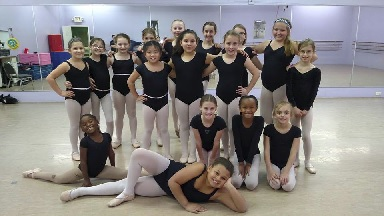
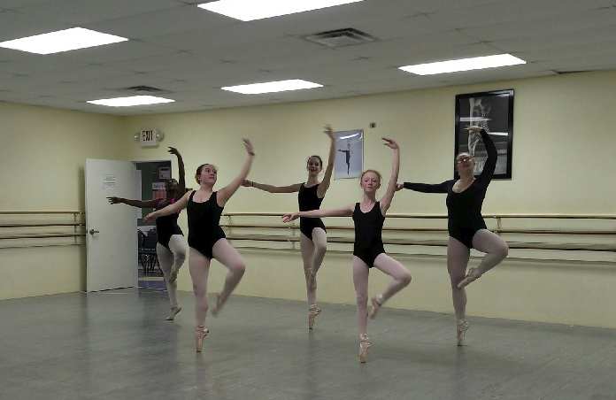
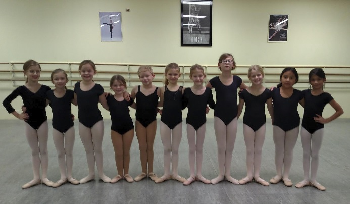

Primary Dance Program I, II, and III
For young children age 3 by June 1st (not yet in 1st grade), we offer three levels of primary work. These levels are designed to introduce the young child to many forms of movement while encouraging creative ability, musicality and coordination. Includes introduction to traditional ballet movement, tap, and acrobatics. Level placement will be determined by the dance studio staff.
Ballet Program
Ballet
Consists of traditional barre and center exercise with correct posture and placement. Pointe work is added when the teacher so determines. The training that a student receives in ballet classes far outweighs the movements learned. It is beneficial to the mind, to self-discipline, teaches logical and analytical thinking and is the basis for all forms of movement.
Modern Dance
Offered to children 12 years old and up, if there is enough interest.
Dance and Acrobatic Program
(First grade and older)
Pre-jazz
An introduction to jazz dance. The movements taught are appropriate to the child's age and ability.
Jazz
Represents the freedom and strength of today's youth with movements both natural and technical.
Tap
Produces coordination and rhythmic timing while showing quick visible progress. Old world tap to upbeat music styles.
Acrobats
Offers graceful movement, similar to gymnastics, without the use of equipment. Helps teach body control and fitness.
Hip - Hop
Latest popular street funk using conservative rap music. Gives the student a feel for the ever-popular street style of dance while keeping in line with family value systems.
Adult Classes
Classes in tap, jazz, ballet and couples ballroom are offered for fun and exercise.